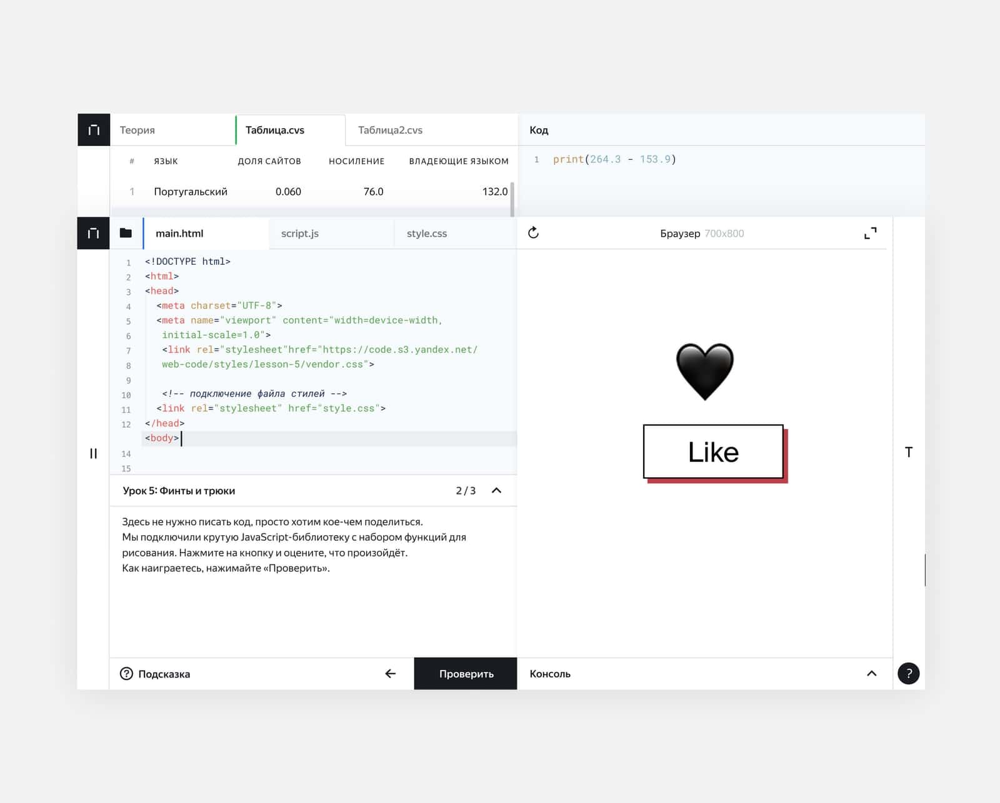
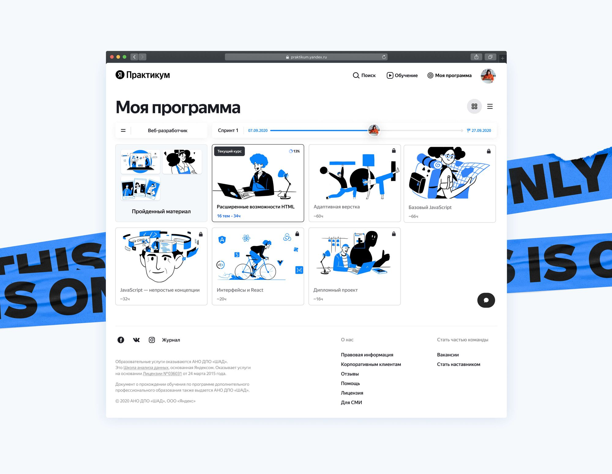
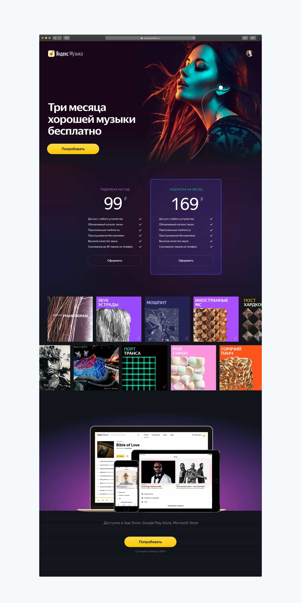

Сергей в Яндексе разделяет дизайн на жизнь и работу. Культура для него мышление результатом, а нарисованные ритуалы он называет симулятором.
Что такое культура дизайна, что это для тебя значит?
Я бы разделял: есть дизайн в жизни вообще, дизайн самой жизни. И есть дизайн-культура на работе. Давай начнем с работы.
В зависимости от людей, размера организации и задач, которые они решают, эта культура может появиться, а может мешать. Если подразумевать под дизайн-культурой какие-то бюрократические, процессные штуки, выстроенный процесс, по которому должны все следовать - это не культура. Это симулятор. Многие путают дизайн-культуру с процессной штукой, по которой надо идти всей команде, чтобы получить результат. Я так не считаю. Я отношу это к процессу.
Культура в большой организации - это когда люди понимают важность своей роли и важность соседней роли. Есть доверие, доверяет экспертизе и мыслит результатом, а не своим конкретным участком работы.
Часто распространенная практика: дизайнер получил задачу от маркетинга, очень конкретно. Дизайнер её сделал, отдал. А потом выясняется, что это намного более широкая вещь. И выясняется, что это вообще не надо было делать. Но когда человек мыслит: мне дал маркетинг, я выполнил эту задачу - с меня не спросишь. Это отсутствие дизайн-культуры.
Её присутствие - это когда человек задаётся вопросами, знает общие цели, куда мы идём, и оценивает свою роль и вклад в процесс. Насколько эффективно эта роль будет отрабатывать и вклад будет полезен.
В Яндексе я вижу, что дизайн-культура очень сильно развита. И не потому, что это был приказ сверху, а потому что сложилось из людей. Люди понимают, что они делают, и зачем. Есть человек, который «зачем» думает. Это важно.
Когда я пришёл в Яндекс, я видел, что всем интересно: почему ты это делаешь? А не просто сделай. Это здоровый скептицизм. Эта культура позволяет высказать своё мнение, даже если ты дизайнер и тебя спросили что-то другое.
Культура дизайна - это, в первую очередь, честность с самим собой. Честность в том, что ты делаешь. Зачем ты это делаешь? Если у тебя есть задача, ты должен её переосмыслить. Не просто выполнить, но понять, правильная ли она. Это требует смелости. Потому что заказчик может не захотеть услышать, что задача не совсем правильная.
Также это уважение к людям, с которыми ты работаешь. Понимание, что у каждого человека есть своя экспертиза, и ты должен её слушать.
И третье - это результат. Не просто процесс, а именно результат. Культура дизайна строится вокруг того, что мы все вместе делаем что-то нужное людям. Дизайн - это не просто красивые картинки. Дизайн - это решение проблем. Если ты применяешь этот принцип к жизни, то ты становишься лучше.
На работе ты приходишь с утра и нужно решить какую-то проблему. Если ты подходишь к этому с позиции дизайнера, то ты будешь думать не только о себе, но и о том, как это повлияет на команду, на компанию, на пользователя. Это и есть культура дизайна.
В большой организации всегда есть системы и процессы. И они важны. Но они не должны быть выше культуры. Я видел компании, где процессы задавили людей. Они просто идут по какому-то пути и не думают, почему они это делают.
А в Яндексе процессы служат культуре, а не наоборот. Люди используют процессы, чтобы быть эффективнее, а не чтобы выполнять формальные требования.
Если у тебя есть процесс, но нет культуры - это бюрократия. Если у тебя есть культура, но нет процесса - это хаос. Нужно оба.
Культура дизайна зависит от того, как люди ведут за собой других. Если у тебя есть лидер, который просто дает приказы и не слушает, то культуры не будет. Но если у тебя есть лидер, который слушает, который объясняет, почему нужно делать именно так, и готов изменить свой взгляд, если его переубедят - вот это создаёт культуру.
Руководители, с которыми я работаю в Яндексе, не боятся высказывать противоположное мнение. Они готовы слушать. Это очень сильно повлияло на то, как я сам понимаю дизайн-культуру.
Дизайн-культура в команде строится на основе доверия и честного общения. Когда я пришёл в команду, я был новенький. И я видел, что ребята очень открыты для обсуждения. Они готовы помочь. Они готовы объяснить, почему они что-то делают так, а не иначе. Это создаёт ощущение, что ты не просто выполняешь свою работу, а ты часть команды, которая решает общую проблему.
В хорошей дизайн-культуре ошибки - это не что-то страшное. Ошибки - это часть процесса обучения. Я знаю, что если я сделаю ошибку, мне помогут её исправить. И я узнаю что-то новое. Это отличается от культур, где ошибка - это повод для наказания. В Яндексе ошибки рассматриваются как возможность улучшить систему. Не отругать человека, а понять, почему это произошло, и что можно изменить. Это создаёт безопасное пространство для экспериментов и инноваций.
Но ядро культуры остаётся. Это честность, доверие, результативность. Когда я вижу компанию, которая смогла сохранить эти ценности, несмотря на рост и изменения - вот это я уважаю.
Дизайн-культура - это не что-то статичное. Это живой процесс. Компании меняются, люди меняются, задачи меняются. И культура должна адаптироваться к этим изменениям.
– Сергей Кудинов



Книги, фильмы, люди, которые повлияли?
Я много читаю, много смотрю. Но самое большое влияние оказала жизнь.
Когда я видел компании, которые построили хорошую культуру, я учился. Когда видел компании, которые этого не сделали, учился на их ошибках.
Есть классические книги по дизайну. Есть люди, которые много пишут и говорят о культуре. Но самое важное – видеть это в действии. В Яндексе я вижу это в действии: как люди ценят друг друга, как слушают, как строят что-то вместе. Это лучший учебник.
Как ты относишься к нейросетям и AI в дизайне?
Интересный вопрос. Я вижу, что нейросети появляются во всех областях, в том числе в дизайне.
На данном уровне польза от этого есть. Они сокращают время. Но я не вижу художественной ценности. Когда смотрю на результаты нейросетей – сразу вижу нейросетевую генерацию.
Мне более приятно смотреть на ручной труд. Это художник рисует. А если художник рисует как нейросеть, так бездушно – мне невероятно неприятно это смотреть.
Короче, пока искусственный интеллект, просто один из инструментов. Будут цениться люди, которые умеют этими инструментами пользоваться и смотрят широко. Они нас не заменят. Пока не появится настоящий искусственный интеллект. Когда он появится, не знаю.
О практике
Сергей Кудинов – креативный директор Яндекс 360.